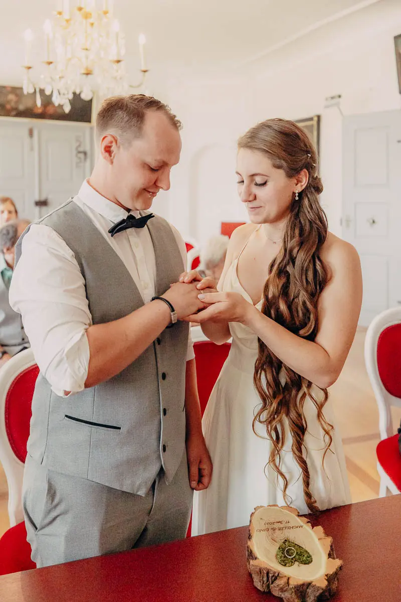
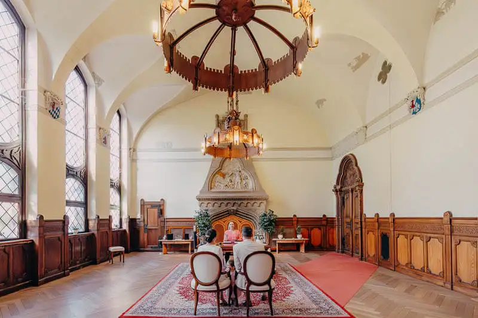
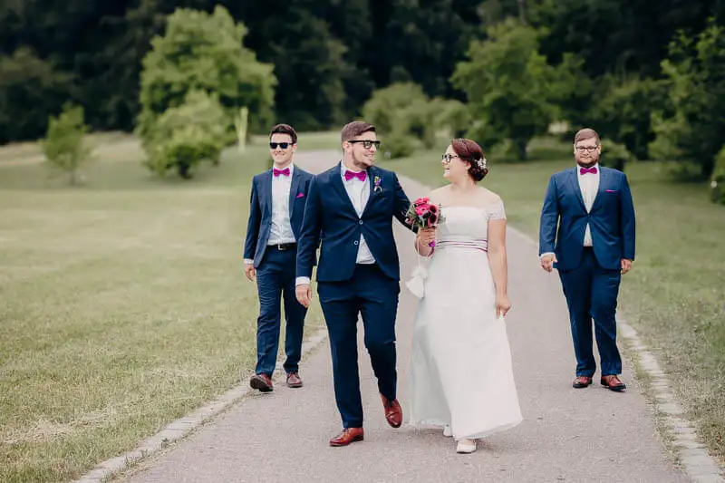
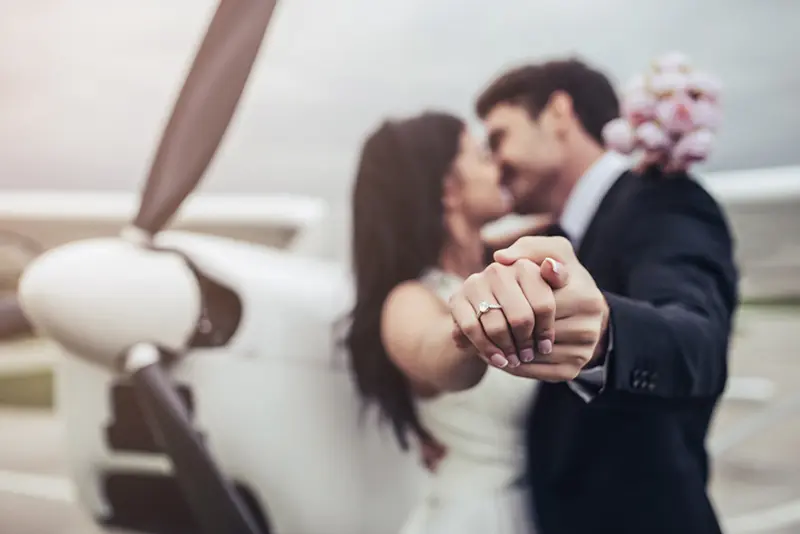
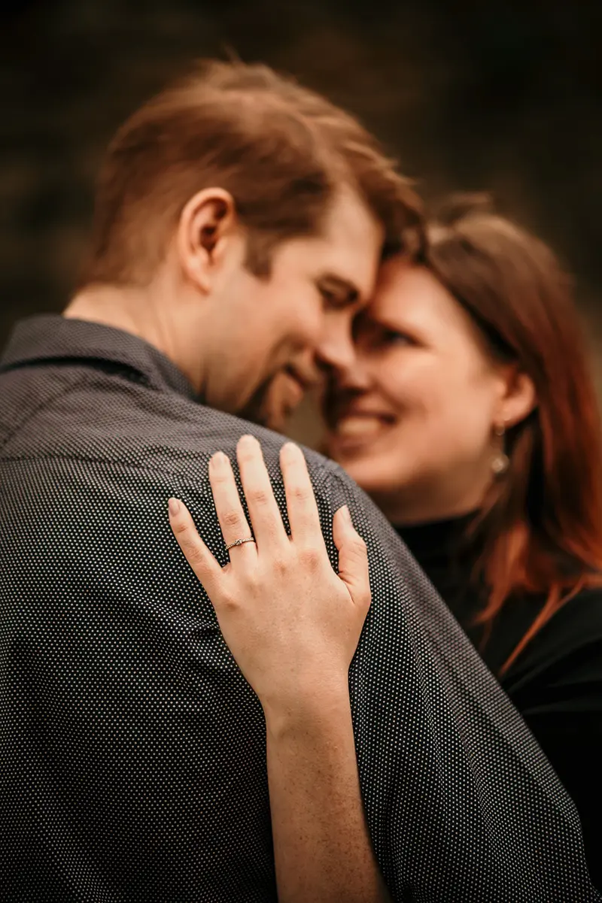
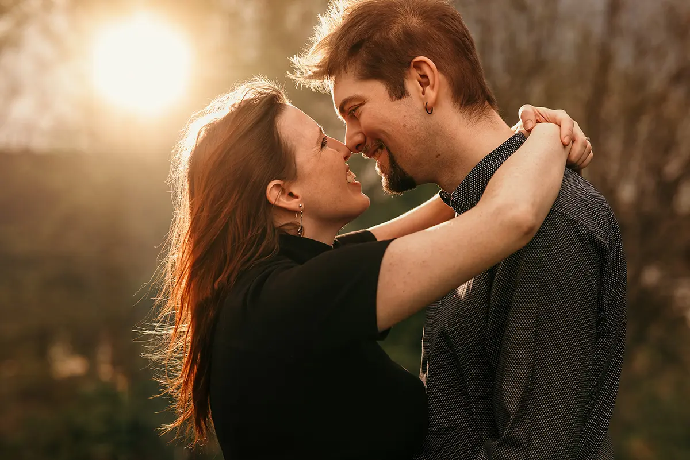
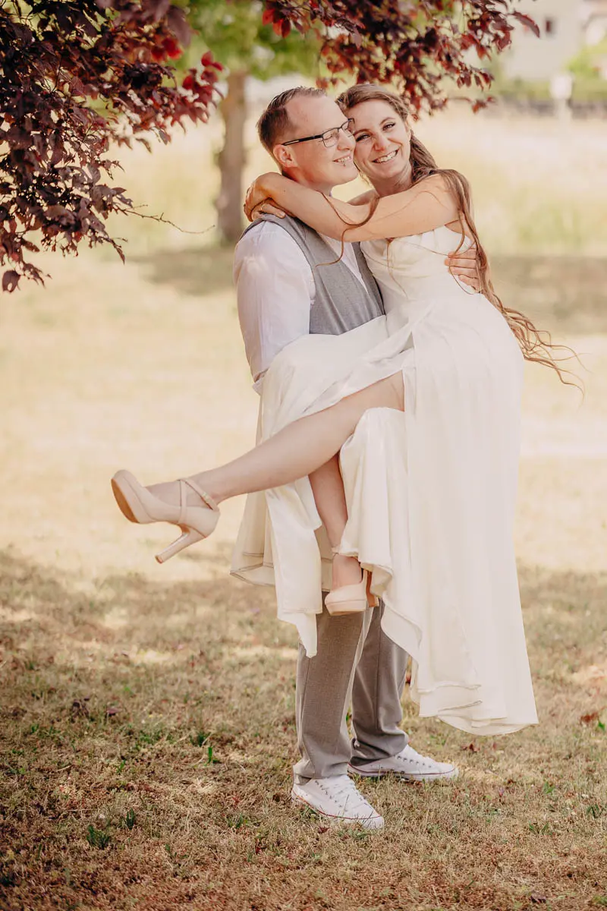
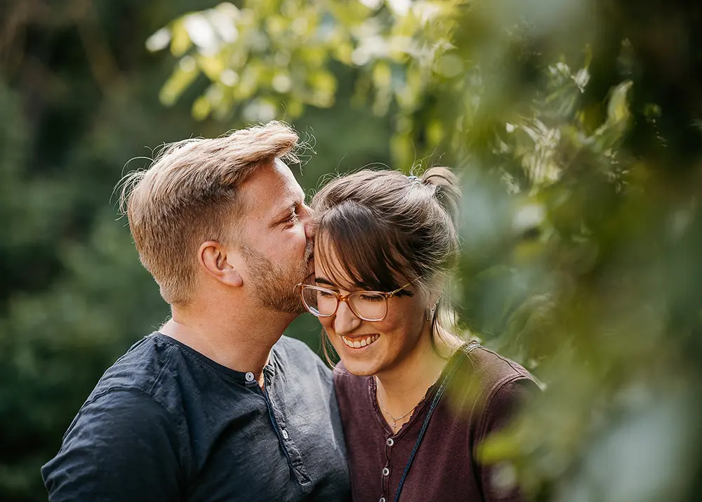
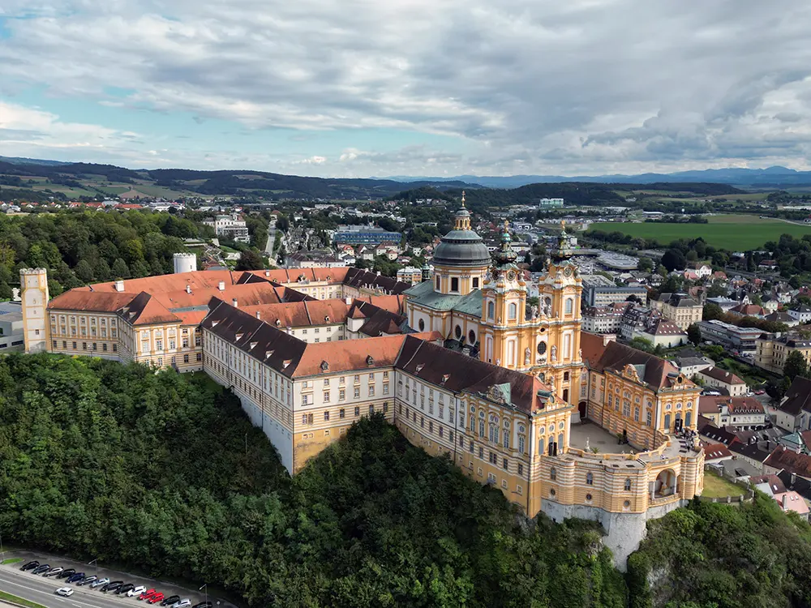

Hochzeitsreportage
Authentische Hochzeitsreportage – der wohl entspannteste Weg, eure besonderen Momente festzuhalten. Ohne fixe "Zeitpakete", denn jede Hochzeit ist einzigartig und verdient eine individuelle Betreuung.
Mehr erfahrenWir sind für Euch da
Unser vorrangiges Ziel ist es, mit euch gemeinsam an einem Strang zu ziehen und eure Hochzeit in ihrer ganzen Authentizität festzuhalten. Mit Vorliebe setzen wir hierbei auf den Reportagestil, bei dem wir uns dezent im Hintergrund aufhalten und die natürlichen Momente ungefiltert einfangen. Das bedeutet, dass wir uns darauf konzentrieren, die echten Emotionen, spontanen Gesten und bedeutungsvollen Augenblicke festzuhalten. So schaffen wir eine lebendige und authentische Erzählung eurer Hochzeit.
Als eingespieltes Duo sind wir optimal positioniert, um die vielen Geschehnisse an eurem Hochzeitstag einzufangen.
Bei unserem persönlichen Vorgespräch stimmen wir gemeinsam mit euch jeden Aspekt individuell ab – von der Dauer bis zu den speziellen Momenten, die für euch besonders wichtig sind. So entsteht eine maßgeschneiderte Erzählung eurer Hochzeit, die eure Persönlichkeit und Einzigartigkeit perfekt widerspiegelt.
Wenn ihr uns für das Standesamt bucht, nehmen wir uns die Zeit, die es braucht. In der Regel planen wir etwa 2 Stunden ein, aber wir sind flexibel. Es kann kürzer oder auch mal länger dauern – wichtig ist für uns, euch von Anfang bis Ende zu begleiten. Vom Moment eurer Ankunft am Standesamt, bis zum Aufbruch als frisch getrautes Ehepaar, halten wir jeden schönen Augenblick fest.
Eure Emotionen, eure Gäste, der Sektempfang vor Ort – wir fangen die einzigartigen Details ein, die eure standesamtliche Trauung zu etwas Besonderem machen. Keine Inszenierung, sondern echte Momente, die eure Geschichte erzählen. Lasst uns gemeinsam euren Hochzeitstag in Bildern verewigen, entspannt und ohne Stress.
Mit unserer Ganztages-Begleitung seid ihr in besten Händen, als persönliche Fotoassistenten begleiten wir euch unaufdringlich durch euren Hochzeits-Tag.
Bei uns gibt es keine festen Zeitgrenzen, denn wir wissen, dass euer Tag so einzigartig ist wie ihr selbst. In der Regel planen wir etwa 10 Stunden ein, aber auch hier gilt: Es kann kürzer oder auch mal länger dauern. Ihr merkt schon, wenn ihr uns nicht mehr braucht 😉
Authentizität steht für uns an erster Stelle. Wir möchten eure Geschichte erzählen, ohne dabei einen Moment zu verpassen. Vom morgendlichen Trubel bei den Vorbereitungen über die emotionalen Augenblicke der Trauung bis hin zur ausgelassenen Feier am Abend – wir sind dabei, um alles festzuhalten.
Egal ob es um die kleinen Details geht oder um die großen Höhepunkte, wir sind da, um sicherzustellen, dass kein besonderer Moment übersehen wird.
 Vor langer Zeit bedeutete "to elope", also "durchbrennen", dass man heimlich weggelaufen ist, um zu heiraten - insbesondere ohne die elterliche Zustimmung.
Vor langer Zeit bedeutete "to elope", also "durchbrennen", dass man heimlich weggelaufen ist, um zu heiraten - insbesondere ohne die elterliche Zustimmung.
Es gibt viele Gründe, warum sich ein Paar dazu entschließt, "durchzubrennen". Heutzutage ist damit der Wunsch nach einer Hochzeit zu zweit gemeint, begleitet von einer kurzen, intimen Zeremonie.
Wenn ihr euch auch wohler fühlt, exklusiv und fernab von Konventionen eure Liebe zu besiegeln, sind wir mit Begeisterung dabei, um die Erinnerungen daran lebendig zu halten.
Hier geht es nicht um Inszenierung, sondern um die rohe Schönheit eurer gemeinsamen Verbindung – jede ehrliche Emotion, jeder spontane Augenblick – festgehalten in Bildern, so unverfälscht wie eure Liebe. Nur so wird euer Elopement zu einer einzigartigen Erzählung.
Die Vielfalt eurer Stile und Vorlieben ist es, die uns mitreißt. Wir lieben es, die individuellen und kreativen Ideen jedes Paares einzufangen.
Solltet ihr noch nach Inspiration für euer Elopement suchen, werft gerne einen Blick auf unsere Bucket List:
Destination Weddings ermöglichen es, die Trauung mit einer unvergesslichen Reise zu verbinden – sei es als intimes Elopement oder im Kreise von Familie und Freunden. Wir reisen gerne mit, um in der Kulisse eurer Wahl eure Hochzeitszeremonie fotografisch festzuhalten.
Als begeisterte Weltenbummler verstehen wir den Zauber, den verschiedene Orte auf der Welt entfalten können. Wenn ihr uns als eure Fotografen für eure Destination Wedding wählt, bringen wir nicht nur Expertise in Sachen Fotografie mit, sondern auch eine Leidenschaft für das Entdecken neuer Kulturen und Landschaften. Unsere Fähigkeit, neben Deutsch auch Englisch fließend zu sprechen, ermöglicht es uns, mit Leichtigkeit mit euch, euren Gästen, sowie weiteren Dienstleistern zu kommunizieren und schafft eine vertraute Atmosphäre, in der wir die authentischen Momente eurer Hochzeit einfangen. Lasst uns gemeinsam dieses Abenteuer in Bildern festhalten und eure Liebe als universelle Sprache feiern.
Wenn ihr euch angesprochen fühlt, stellt uns gerne eine unverbindliche Anfrage mit Details zu euren Ideen und Wünschen.
Unsere Liebe zur Natur spiegelt sich in unserer Vorliebe für Outdoor-Engagement-Shootings wider. Wir haben eine Auswahl besonderer Locations, die perfekte Kulissen für eure einzigartige Geschichte bieten. Doch wir lieben auch Abenteuer und sind gespannt darauf, von euch an eure Lieblingsorte entführt zu werden. Egal, ob das der Ort eures ersten Dates, eurer Verlobung oder einfach ein Platz ist, der euch verbindet – wir sind dabei und freuen uns darauf, gemeinsam mit euch authentische und wertvolle Erinnerungen zu schaffen.
Diese Fotos halten eure Freude und Liebe in dieser besonderen Phase fest und sind somit perfekt geeignet, um eure Save-the-Date oder Einladungskarten zu einem echten Hingucker zu machen oder auch eure Hochzeits-Website mit einem professionellen Look abzurunden.
Das Engagement-Shooting ist noch dazu eine tolle Gelegenheit, euch vorab mit dem fotografiert werden (und mit uns!😋) vertraut zu machen, damit ihr am Hochzeitstag wie Rockstars vor der Kamera glänzt.
Unser After-Wedding-Shooting bietet euch die entspannte Möglichkeit, eure Hochzeit mit einem besonderen Fotoshooting fortzusetzen – und das ganz ohne den Zeitdruck des Hochzeitstages. Ihr habt die Freiheit, euer Hochzeitsoutfit erneut zu tragen und könnt euch ein oder zwei Locations aussuchen, die für euch eine besondere Bedeutung haben. Diese Option erlaubt es uns, gemeinsam kreative und emotionale Momente festzuhalten, während ihr euch ohne Stress und in eurem eigenen Tempo bewegt.
Ein weiterer Vorteil des After-Wedding-Shootings besteht darin, dass es als Back-Up für das Paarshooting am offiziellen Hochzeitstag dienen kann. Wenn Wetter, Unwägbarkeiten oder unvorhergesehene Umstände die Durchführung des Paarshootings am Hochzeitstag beeinträchtigen, steht das After-Wedding-Shooting als flexible Alternative bereit. So könnt ihr sicher sein, dass ihr die Paarfotos bekommt, die ihr euch wünscht - unabhängig von den äußeren Bedingungen am eigentlichen Hochzeitstag.
Meldet euch gerne bei uns, wenn ihr die Lust verspürt, euch nochmals wie am Tag eurer Hochzeit zu fühlen und einige weitere schöne Fotos von euch im Hochzeitslook zu erhalten.
Ihr müsst natürlich nicht heiraten, damit wir von euch schöne und authentische Fotos machen. Eure einzigartige Verbindung in Bildern einzufangen, ist das, was uns begeistert: Sei es bei einem klassischen Outdoor-Shooting an eurem Lieblingsort, einem Besuch beim Eisdealer um die Ecke oder beim Schlendern über den Wintermarkt.
Oder lasst uns gemeinsam intime Momente einfangen – sei es ein entspannter Sonntagmorgen im Bett oder andere vertraute Augenblicke bei euch zuhause. Eure Liebe, authentisch und ungefiltert, in den eigenen vier Wänden.
Schreibt uns gerne an, denn eure spontanen Ideen sind für uns Inspiration, und wir freuen uns darauf, gemeinsam mit euch Erinnerungen zu schaffen, die genauso einzigartig sind wie ihr.
Mit unserer Next-Level Bildbearbeitung gehen wir weit über das Standardangebot hinaus. Diese umfassende Art der Bildbearbeitung ist für uns selbstverständlich und beinhaltet das Entfernen kleiner störender Elemente, die horizontale Ausrichtung, optimale Helligkeitsanpassung und den perfekten Zuschnitt sowie natürliche Beauty-Retusche. Eure Erinnerungen werden von uns nicht nur bearbeitet, sondern liebevoll veredelt, damit jedes Bild seine volle Strahlkraft entfaltet.
Falls Ihr nach Erhalt aller Bilder den Wunsch nach zusätzlicher Bearbeitung habt, ist das problemlos möglich. Optional bieten wir gegen eine kleine Gebühr umfassende Retuschen für einzelne Bilder an, wie das Entfernen von Personen aus dem Hintergrund oder eine High-End Beauty-Retusche.
Die fliegende Kamera eröffnet eine Welt voller Möglichkeiten, um eure Feierlichkeiten aus unkonventionellen Blickwinkeln einzufangen. Von luftigen Bildern des Brautpaares bis zu eindrucksvollen Panoramen der festlichen Gesellschaft - Drohnenaufnahmen schenken euch Momente, die eure Geschichte auf eine einzigartige Art und Weise zum Leben erwecken.
Alleinstehende Locations, wie etwa ein Gutshof oder eine freistehende Scheune, eignen sich besonders gut für den Einsatz von Drohnen für Foto- und Videografie, da sich keine Nachbarn gestört fühlen könnten.
Im Zuge der Planung für Drohnenaufnahmen zu Eurer Hochzeit solltet ihr am besten mit dem Besitzer Eurer Location sprechen, ob er es Euch erlaubt, dass wir an eurer ausgewählten Location mit der Drohne abheben dürfen. Bei Niederschlag und starkem Wind kann die Drohne leider nicht starten. In der Umgebung von Flughäfen und Krankenhäusern sind Drohnen selbstverständlich vollständig verboten.
Wenn alle Voraussetzungen stimmen, sind Drohnenaufnahmen eine geniale Möglichkeit ungewohnte Perspektiven zu nutzen, um eure Hochzeit in ein episches visuelles Erlebnis zu verwandeln
Alle eure Bilder werden bequem in unserer Online-Galerie bereitgestellt. Dort könnt ihr mühelos durch die Fotos navigieren, sie direkt betrachten und herunterladen. Zusätzlich bieten wir die Option, eine spezielle Untergalerie nach euren Wünschen anzulegen. Das ermöglicht es euch beispielsweise, euren Gästen direkt einen Link mit den Fotos der Trauung und der Party zu senden, ohne Zugriff auf die intimen Ankleidebilder.
 Love is Love
Love is Love